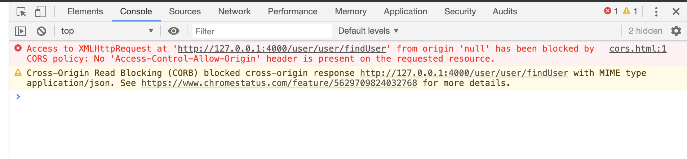
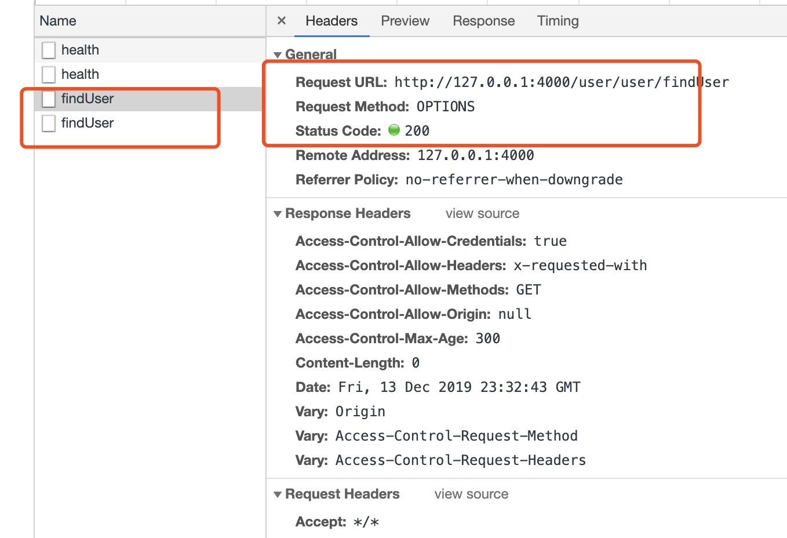

场景
在服务后台都会出现跨域cors问题，不过一般spring解决起来比较方便，在框架+框架的基础上，问题就显得特别明显了，各种冲突，不了解源码的运行原理，解决起来也是有心无力。
这里介绍的是zuul配置了跨域，在前端调用仍然会出现跨域的问题。
一般没有权限的接口加上cors配置就会通过跨域的问题。不过在服务间调用具有权限的功能，莫名的报跨域问题。
post特殊请求
在解决问题时发现 post 请求也有点特殊，这里也需要处理一下。
post请求分为简单请求和复杂请求。
在 CORS 中，可以使用 OPTIONS 方法发起一个预检请求，以检测实际请求是否可以被服务器所接受。预检请求报文中的 Access-Control-Request-Method 首部字段告知服务器实际请求所使用的 HTTP 方法；Access-Control-Request-Headers 首部字段告知服务器实际请求所携带的自定义首部字段。服务器基于从预检请求获得的信息来判断，是否接受接下来的实际请求。
以及 OPTIONS 未携带任何权限相关的内容，会被认证拦截，我们也得放开 OPTIONS 类型请求

之前设置很简单，习惯操作把之前的代码复制了过来，第一次操作是创建了一个 CorsFilter bean，但是简单的请求确实通过了，不过权限接口过不了，于是按照一些资料配置了下面的代码 注入了 FilterRegistrationBean bean 还设置了 order 加载顺序。
解决后无果 仍然和之前的效果一致。
/**
* 跨域配置 C - Cross O - Origin R - Resource S - Sharing
*
* @author purgeyao
* @since 1.0
*/
@Configuration
//@Order(Ordered.HIGHEST_PRECEDENCE)
public class CorsConfig {
@Bean
public FilterRegistrationBean filterRegistrationBean() {
final UrlBasedCorsConfigurationSource source = new UrlBasedCorsConfigurationSource();
final CorsConfiguration config = new CorsConfiguration();
config.setAllowCredentials(true);
config.setAllowedOrigins(Arrays.asList("*"));
config.setAllowedHeaders(Arrays.asList("*"));
config.setAllowedMethods(Arrays.asList("*"));
config.setMaxAge(300L);
source.registerCorsConfiguration("/**", config);
CorsFilter corsFilter = new CorsFilter(source);
FilterRegistrationBean filterRegistrationBean = new FilterRegistrationBean(corsFilter);
filterRegistrationBean.setOrder(0);
return filterRegistrationBean;
}
}在一些资料+源码的帮助下，尝试了下面代码：
这次实现了 CorsFilter 类 加载了 @Order 顺序为 (Ordered.HIGHEST_PRECEDENCE) 最优先。
/**
* 解决 zuul+oauth2 跨域配置 C - Cross O - Origin R - Resource S - Sharing
*
* @author purgeyao
* @since 1.0
*/
@Component
@Order(Ordered.HIGHEST_PRECEDENCE)
public class AjaxCorsFilter extends CorsFilter {
public AjaxCorsFilter() {
super(configurationSource());
}
private static UrlBasedCorsConfigurationSource configurationSource() {
CorsConfiguration corsConfig = new CorsConfiguration();
// List<String> allowedHeaders = Arrays.asList("x-auth-token", "content-type", "X-Requested-With", "XMLHttpRequest");
List<String> exposedHeaders = Arrays
.asList("x-auth-token", "content-type", "X-Requested-With", "XMLHttpRequest");
// List<String> allowedMethods = Arrays.asList("POST", "GET", "DELETE", "PUT", "OPTIONS");
List<String> allowedHeaders = Arrays.asList("*");
List<String> allowedMethods = Arrays.asList("*");
List<String> allowedOrigins = Arrays.asList("*");
corsConfig.setAllowedHeaders(allowedHeaders);
corsConfig.setAllowedMethods(allowedMethods);
corsConfig.setAllowedOrigins(allowedOrigins);
corsConfig.setExposedHeaders(exposedHeaders);
corsConfig.setMaxAge(36000L);
corsConfig.setAllowCredentials(true);
UrlBasedCorsConfigurationSource source = new UrlBasedCorsConfigurationSource();
source.registerCorsConfiguration("/**", corsConfig);
return source;
}
}哈哈哈，解决了，但是有没有感觉到莫名其妙啊，经过了解
发现其实只是一个加载顺序的问题，我们上面注入的 FilterRegistrationBean 也可以使用的，只是在设置order的时候有点问题 需要设置比 security 优先级高，改为 Ordered.HIGHEST_PRECEDENCE 发现成功可以通过跨域了。
/**
* 跨域配置 C - Cross O - Origin R - Resource S - Sharing
*
* @author purgeyao
* @since 1.0
*/
@Configuration
//@Order(Ordered.HIGHEST_PRECEDENCE)
public class CorsConfig {
@Bean
public FilterRegistrationBean filterRegistrationBean() {
final UrlBasedCorsConfigurationSource source = new UrlBasedCorsConfigurationSource();
final CorsConfiguration config = new CorsConfiguration();
config.setAllowCredentials(true);
config.setAllowedOrigins(Arrays.asList("*"));
config.setAllowedHeaders(Arrays.asList("*"));
config.setAllowedMethods(Arrays.asList("*"));
config.setMaxAge(300L);
source.registerCorsConfiguration("/**", config);
CorsFilter corsFilter = new CorsFilter(source);
FilterRegistrationBean filterRegistrationBean = new FilterRegistrationBean(corsFilter);
// 设置为 Ordered.HIGHEST_PRECEDENCE
filterRegistrationBean.setOrder(Ordered.HIGHEST_PRECEDENCE);
return filterRegistrationBean;
}
}解决解决。。。
有关 OPTIONS(NDN
web docs) 介绍。
在发送 post 请求 会发现在真正发送之前会有一个 OPTIONS 请求。
因 OPTIONS 为携带任何有状态的认证信息，被权限拦截下来异常，就没有之后的真正请求了。
我们只需要吧 OPTIONS 请求放开 返回200状态即可。
有很多办法做到，可以在zuul网关放过，也可以通过 security 添加 忽略拦截列表。
public class SecurityConfiguration extends WebSecurityConfigurerAdapter {
...
@Override
protected void configure(HttpSecurity http) throws Exception {
...
// 添加忽略拦截OPTIONS 类型的请求
http.authorizeRequests().antMatchers(HttpMethod.OPTIONS).permitAll();
...
}
}
万事大吉。
简单的bug解决起来简单点，不过遇到交集的bug，有心无力的感觉，莫名其妙的问题，需要耐心观察源码运行原理。
示例代码地址:zuul-security
作者GitHub:
Purgeyao 欢迎关注
qq交流群:
812321371微信交流群:MercyYao
微信公众号: